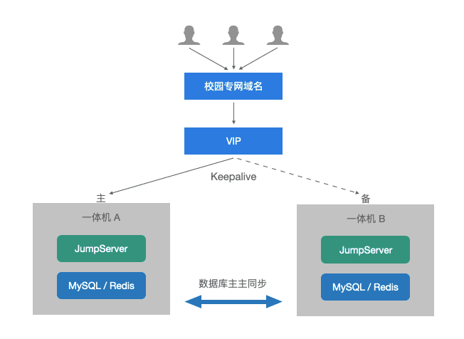
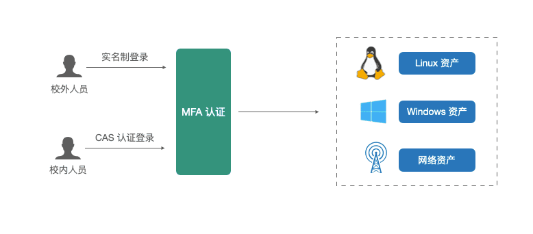

中国矿业大学是教育部直属的全国重点高校，是教育部、应急管理部与江苏省人民政府共建高校，先后进入国家“211工程”“985优势学科创新平台项目”和国家“双一流”建设高校行列，学校现坐落于素有“五省通衢”之称的国家历史文化名城——江苏省徐州市，有文昌和南湖两个校园，占地4200余亩。

中国矿业大学自2019年起着手构建智慧校园 “十个一”核心任务，即一张网（一体化融合网）、一朵云（超融合数据云平台）、一张表（个人信息管理表）、一个号（身份管理号）、一片湖（治理数据湖）、一空间（泛在化研学空间）、一园通（全覆盖智慧园）、一站式（一站通办）、一周期（人才培养全周期）和一面墙（全方位安全防护墙），全面开展校园信息化建设。
IT运维的痛点与难点
随着学校信息化系统规模的不断扩张，在日常的IT运维工作中，中国矿业大学也面临着很多实际的运维管理问题：
■ IT资产碎片化，运维环境复杂
中国矿业大学目前在“两校三地”数据中心的机房拥有虚拟机500余台，物理服务器几十台，还有各类单位的服务器分布在学校的其他机房和实验室等不同位置，物理空间跨度大，IT资产类型多。
同时，学校本身有很多业务系统是由业务部门所建设，第三方厂商承建运维的。因此，第三方厂商的工程师和学校业务部门的老师都有远程登录IT资产的需求。这也就导致学校信息化处日常运维和审计的工作十分繁重；
■ 存在密码泄露、丢失等安全风险
学校分配虚拟机后，虚拟机的账号密码是交由业务部门老师和厂商工程师保管和维护的。保管的方式通常是记录在Excel表格或者记事簿中，这种简单的记录方式会带来密码泄露的安全风险。同时，由于业务部门老师的职位变更和厂商工程师的更换，经常有密码修改后又丢失的情况发生，系统存在很大安全隐患，不利于学校进行IT资产的安全运维和规范管理；
■ 缺乏统一的IT资产登录入口，审计困难
虚拟机分配到业务部门或第三方厂商后，运维人员没有一个统一的访问入口，有通过校内网直接访问的，有使用向日葵等远程工具访问的，还有通过VPN远程访问的，系统缺乏统一的IT资产登录入口。
业务部门的老师不知道自己名下有多少个IT资产，信息化处也不清楚学校的IT资产被何人在何时登录，信息的不透明给IT资产的安全运维带来了很大的隐患。
面对以上虚拟机和服务器在日常运维过程中出现的问题，中国矿业大学的信息化处决定改变原有的IT资产运维管理方式，构建一个更加安全、规范的堡垒机运维安全体系。
选择JumpServer堡垒机的原因
针对学校IT资产运维的痛点与需求，中国矿业大学的信息化部门对市场上多款堡垒机产品进行了调研和测试，认为JumpServer堡垒机在技术层面上能够满足学校的需求，并最终选择JumpServer堡垒机企业版作为学校IT资产运维安全体系的重要组件。选择JumpServer堡垒机的主要原因包括：
1. 无插件的Web终端访问方式
JumpServer堡垒机无插件、纯浏览器访问的设计思路非常契合中国矿业大学对于IT资产运维简单化、便捷化的期望。运维人员无需在本地安装专用的客户端插件，直接通过浏览器Web终端，即可实现多种操作系统下、多种IT资产类型的访问；
2. 开源开放
作为一款广受欢迎的开源堡垒机，JumpServer拥有非常活跃的开源社区，并且提供了开放的API接口，方便用户拓展更加丰富的功能。基于接口的开放能力，未来，中国矿业大学还计划把堡垒机的能力上浮到学校办事大厅，支持各院系自行申请资源访问权限。
同时，国家“十四五”规划也重点突出了开源新生态的建设，作为教育部直属的全国重点高校，中国矿业大学也希望通过自己的使用和意见反馈，与JumpServer共同建设开源生态；
3. 迭代速度快
一直以来，JumpServer坚持按月迭代发布新版本，产品迭代更新速度快。用户可以通过GitHub、技术交流群等多种方式提出对JumpServer的需求和反馈。JumpServer开源项目组也一直用心聆听用户的声音，收集用户的建议，在持续的更新迭代中增加新功能，优化使用场景，不断优化用户的使用体验。
JumpServer的部署架构
JumpServer堡垒机企业版提供纯软件和软硬件一体机两种交付方式。基于学校现网环境的要求，学校选择了软硬件一体机的方式，并且通过部署两台一体机，实现主备模式下的高可用架构。
同时，通过Keepalived实现VIP漂移，达到主备切换的效果。也就是说，在主节点和备节点上部署相同的JumpServer服务，使用一个 VIP地址对外提供服务。当主服务器发生宕机时，Keepalived组件会自动将VIP漂移到备用服务器，确保服务的正常运行。

▲ 图1 中国矿业大学JumpServer部署架构JumpServer的使用价值
实际应用JumpServer堡垒机之后，为学校带来了以下几点价值收益，大幅提升了学校运维管理的能力：
■ 统一IT资产访问入口
通过JumpServer堡垒机，校内用户可以对接统一的身份认证系统（基于CAS协议），校外工程师的账号采用实名制。这样一来，就实现了校内、校外IT资产运维“一人一号”的模式，有效避免了账号密码泄露的风险。用户通过登录JumpServer可以访问已授权的服务器，通过统一的门户访问所有的IT资产，拥有统一的资产访问入口。
同时，资产的账号密码统一托管在JumpServer中，用户无需输入账号密码就可以直接登录访问，提高了运维管理效率，也避免了密码丢失的情况发生；
■ 安全稳定运行的保障
在国家层面，对网络安全的重视程度不断提升，相关的法律法规日益完善。学校对IT资产的运维安全审计和专业化管理也提出了更高的要求。管理员通过开启MFA多因子认证功能，加强了IT资产运维“一人一号”的可靠性和安全性。同时，JumpServer堡垒机符合4A规范，满足了学校运维安全审计的要求。

▲ 图2 中国矿业大学通过JumpServer实现安全登录访问期待与展望
中国矿业大学通过JumpServer堡垒机实现了对学校IT资产的统一运维管理，满足了学校关于“业务部门理的清，校外厂商管的了，信息化处看的到”的基本需求。
如今，随着IT建设国产化的不断深入，希望JumpServer未来能够增加对高校常用的国产专有云的支持，不断扩大云上资产的管理范围。